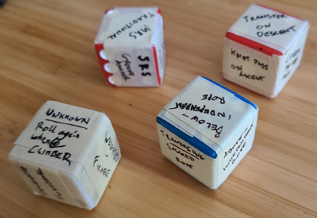

Attempting rescue procedures increases risk.
These dice are intended to inspire thought and discussion.
If used to inspire real-life rescue practice, you do so AT YOUR OWN RISK.
Click the "Roll Dice" button.
Each "die" will display one of six possible states, providing a technical structure for a potential tree climbing rescue scenario. Some details are omitted such as the specific SRS or MRS used, and are best decided by those participating in the scenario.
It is left to the user to imagine how this scenario may have developed.
A climber has become incapacitated and must reach the ground for evacuation / advanced medical care.
A single rescuer is present to perform the rescue.
It may be most beneficial to use the "rolled" scenario as a starting point and instead consider a slight variation.
This could be as simple as choosing a different option on one dice, planning the rescue for an unknown climber system state or something more complicated such as the presence of an untrained but helpful ground assistant.
The type of system & rigging used by the climber requiring rescue.
MRS, SRS or Tyrolean
Exact configuration of the system depends on equipment available to the climber & intended difficulty of the rescue.
If the climber is currently weighting the system and condition of that system.
Will the climber need to be transferred to a new system, or can the current system be used to assist in the rescue? Even with a functional system, a transfer may still be needed to complete the rescue, but lowering the climber to transfer weight is much easier than lifting them.
In a real rescue, it may be difficult to know the state of the climber's system prior to starting the rescue. Consider forming a plan which will function regardless of the system state.
Where the rescuer is in relation to the climber at the start of the incident, and if the resources present would require the rescuer to access the climber using the climber's own rope. Such a rescue greatly increases the risk to both the rescuer and climber.
Adds a layer of complication or assistance.
In general, it is assumed that the climber is unable to assist in their rescue (unconsious). The bonus die may change that.
The original physical dice were created by Sam Johnson for a session of rescue practice amongst friends.
These were later refined and turned into this digital form by Chris and Sam for ease of use in the field.